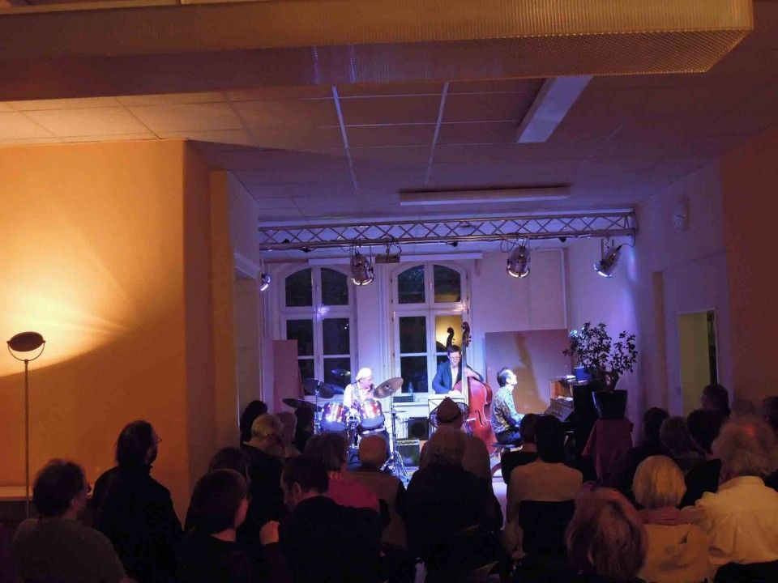
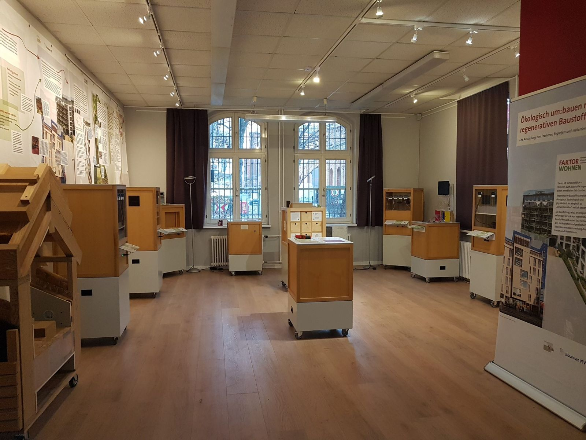
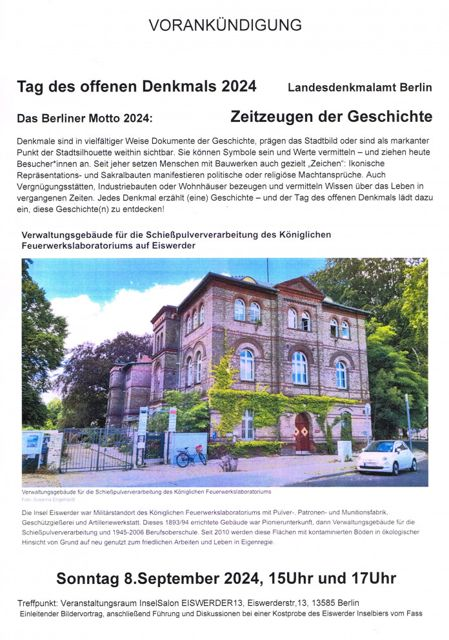
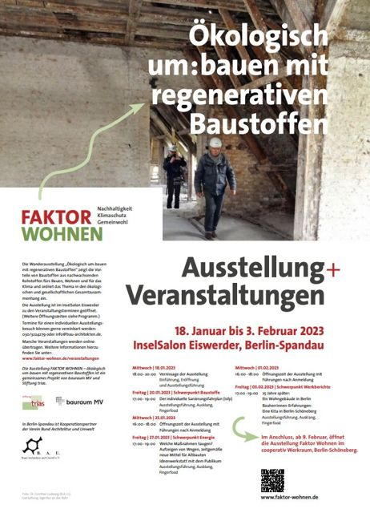
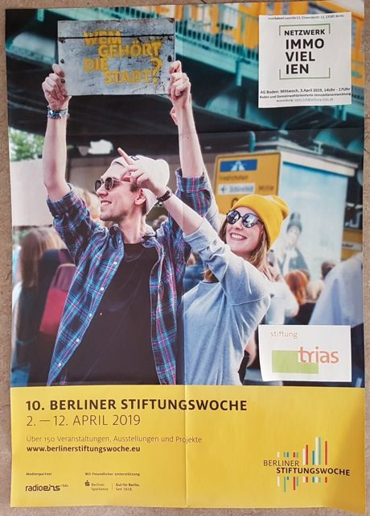
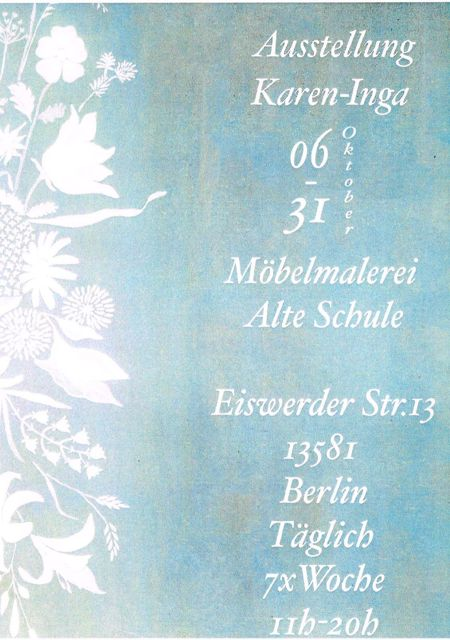
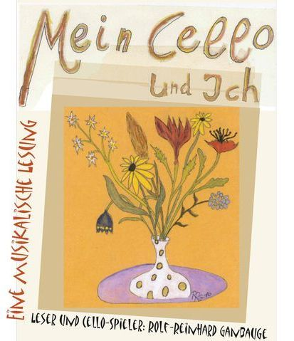
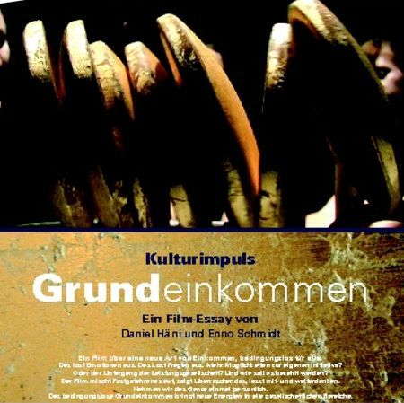

Kultur & Ausstellungen
Raum für das,
was Sie bewegt.
Konzerte, Lesungen, Filmabende und Ausstellungen: Im InselSalon kommen Menschen und Ideen zusammen.

Kunst in guter Gesellschaft
Zeigen. Zuhören. Ins Gespräch kommen.
Ein Klavier ist vorhanden, Bilderleisten stehen für Ausstellungen zur Verfügung. Leinwand und Beamer können bereitgestellt werden. Planen Sie eine Vernissage, eine Verkaufsausstellung oder einen Filmabend mit anschließendem Gespräch.

Rückblick · 13. September 2026
Ein Haus voller Verbindungen.
Tag des offenen Denkmals 2026
Unter dem Motto „NetzWERKE: Denkmale & Infrastruktur“ stand für den 13. September ein Nachmittag rund um Insel und Haus auf dem Programm.
Angekündigt waren Vorträge von Manfred P. Schulze und Susanna Engelhardt, Führungen durch Nutzungseinheiten und den Garten zu den drei Naturdenkmalen sowie Gespräche und eine Kostprobe des Inselbiers von Hobbybrauer Andreas Martin.
Ein Blick zurück auf das angekündigte Programm; ein Veranstaltungsbericht liegt noch nicht vor.
Aus unserem Veranstaltungsarchiv
Was hier schon Platz gefunden hat.
Originalplakate vergangener Veranstaltungen. Zum vollständigen Ansehen auswählen.
{kind=link}


{kind=link}

{kind=link}



{kind=link}

{kind=link}

{kind=link}

Ihre Kulturidee für den InselSalon?
Sprechen wir über Termin, Format und die Möglichkeiten im Haus.